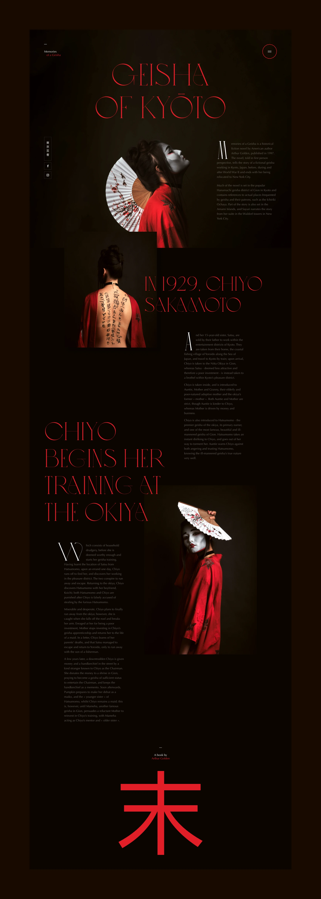
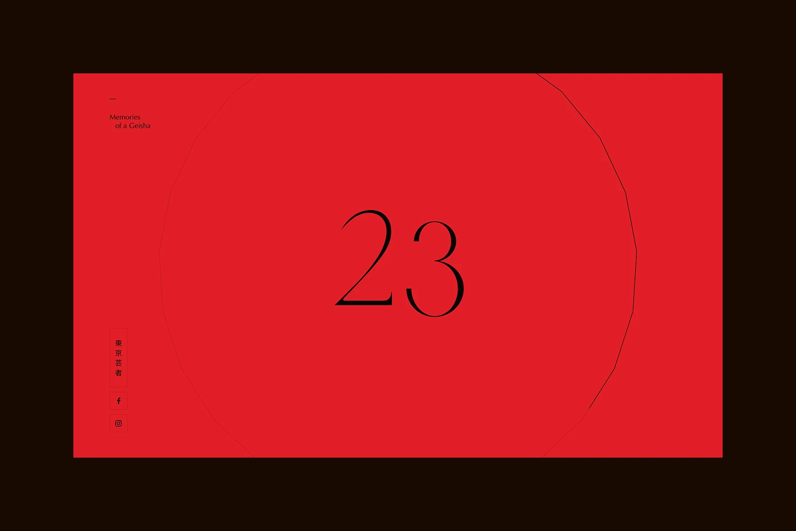
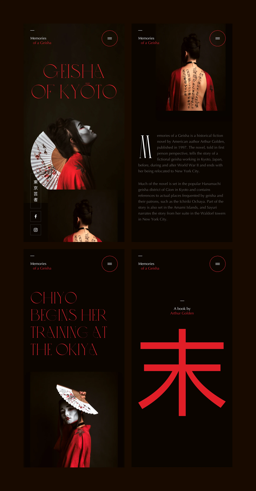

Memories Of A Geisha
April 2020
This is a small personal project inspired by the beautiful photographs of Nghia Do Thanh. I came across his work and was immediately drawn to the atmosphere and visual storytelling of his images. It inspired me to create a small landing page exploration, focusing on the layout, interactions, and loader animation.
-
This is a
Personal project


